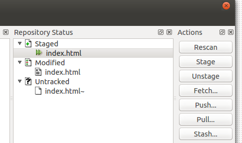
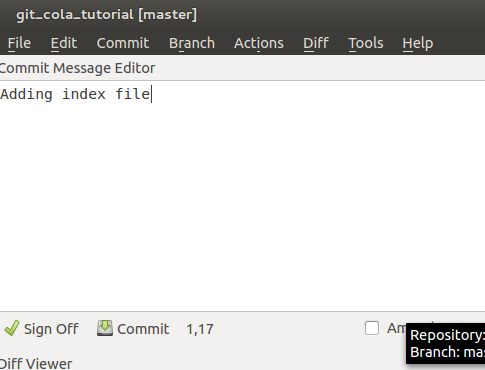
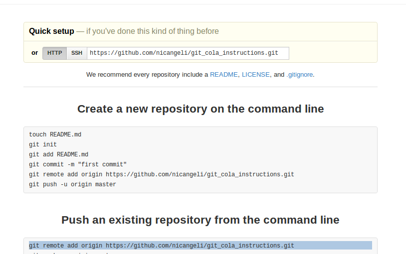
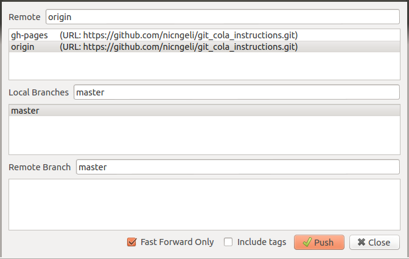
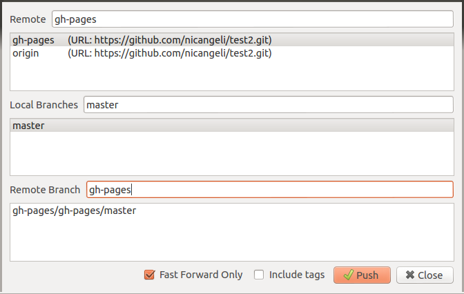

We'll be pushing Git repositories to a special branch called gh-pages in session 3. This lets us put our own webpages online for free.
Git-cola is very similar to gitg, but is a little easier to use. You install it in the same way. From the command line type:
sudo apt-get install git-cola
Use the terminal to initialize a git repository in your website folder. Use the cd command to "change directory" to your website folder. Use it like so:
cd /home/Caitlin/Documents/my_websiteWhere /home/Caitlin/Documents/my_website is the path to the website (folder) that you are trying to put online.
Then type: (which means initialize an empty git repository in this folder)
git init
Open git-cola and it should prompt you to either open, clone or close.
Select open and navigate to your website folder.
All of your files will be listed in the box on the right. For each that you want to commit, select it then hit stage from the list on the right.
Type your commit message in the box on the left and hit commit.
Got to github.com and login. Create a new repository (button top right) and copy the URL to it. Should start https://github.com/YOUR_USERNAME/REPO_NAME.git
Git-cola is a bit off a pain when it comes to adding remote branches. We need to use the terminal again (just to set it up). Use the cd instructions again to make sure you are in the right folder. You can check where you are with pwd. Type pwd and it will tell you where you are, it stands for print working directory.
Pop back over to github. You should have this page open still...  Copy the line that starts git remote add origin and paste it into your terminal, hit enter. Paste it into the terminal again and change the origin to read gh-pages. Hit enter again. You've just added two remote branches into your repository.
Use the push button from the menu on the right, but first hit rescan. Select origin from the top box and master from the middle. It should look like this:  Hit push. It will prompt for your username and pw. Enter them.
For each version of your site that you want to publish, first use the push instructions above to make sure you've pushed to origin. Then use the push button again, but this time select gh-pages in the top box and the bottom. Make it look like so: 
Find your repository on GitHub. You should now have 2 branches. If you go into the settings you should also find a URL where your site is published.